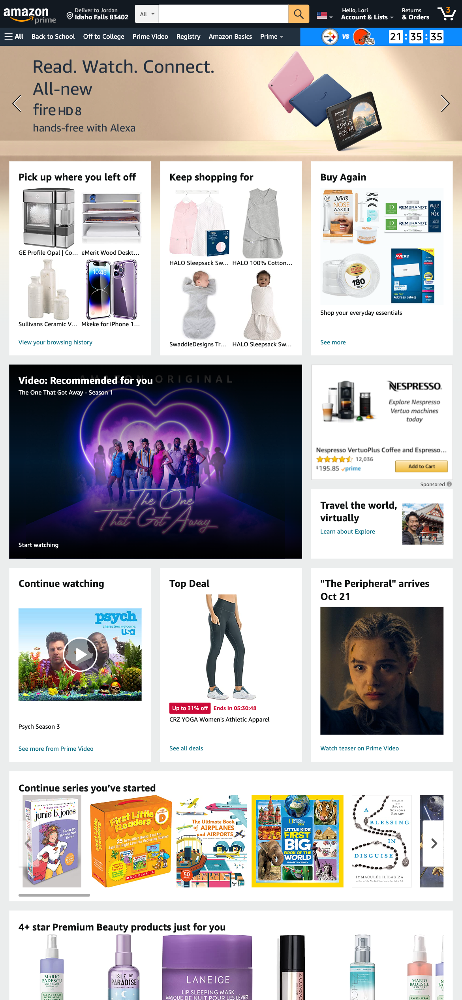

Rule of Thirds
Amazon
Amazon does a good job of using the rule of thirds in very subtle ways. When you look at the top add that says read watch and connect you can see the rule of things in where the devices are placed. This makes it a good ad because your eyes are drawn to exactly what they want you to see.
White Space and Clean Design
ESPN
.png)
I have always felt like espn has done a great job with their white space and keeping a clean design. This could very easily be super hard for them because of all the different things that are going on and things that they are trying to display. They have done it in such a way that it is easy to find exactly what you are looking for and it does not feel like a bunch of cluter.
Contrast
Rockwell Homes
 (1).png)
Rockwell homes did a great job with their contrast and making their site pop. It can be super difficult when working with a lot of white to make it so that you do not have to much contrast that the page looks off. But I think with the subtle pops of blue it makes their site look really professional.